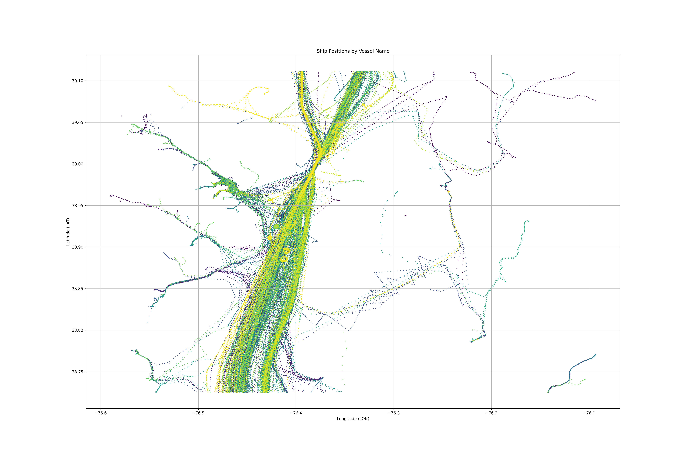

I am a Computer Science student at the University of Maryland (2021-2025), College of Computer, Mathematical, and Natural Sciences with an enthusiasm for programming and aerospace related topics. The following links showcase some general information about me and my projects. Please click through the links and check them out!
email-work | email-personal | linkedin | github/*Computer Science Projects*/
Whispers of the Abyss
January 2024 | Unity C#

- A submarine simulation horror game in which you must pilot your ship to collect data from shipwrecks while avoiding the dangers of the depths.
- Maps are randomly generated with Perlin noise
Link to Documentation
Anomaly Detection Using STL
September 2023 | Python
 - This project endeavors to leverage Signal Temporal Logic (STL) to enhance anomaly detection in continuous, time-variant traffic data.
- Unlabeled ship/traffic traffic data undergoes preprocessing using unsupervised machine learning algorithms to cluster synchronous patterns. The framework is further enriched by injecting artificial bad actors, followed by the application of STL for precise quantification and specification of anomalous detections.
Link to Documentation
Software Security Testing

November 2023 | Java
- Encrypted gradebook system designed in Java
- Implementation of AES data encryption, code obfuscation.
Link to Documentation
Detecting and Avoiding Gap-Like Structures on a Variable-Sweep Wing UAS
March 2022 | Python
- Obstacle Avoidance for UAVs.
- Written in Python using OpenCV library
Link to Documentation
Thermal Imaging [OPEN CV]
June 2022 - Present | C++, C#, Pyhton

- Implemented an image processing Algorithm to be used with UAVs in order to identify the severity of wildfires using thermal imaging.
- Utilized several post-processing techniques to achieve consistent identification of fires and their total surface area. Based on the data, each fire can be assigned a severity classification.
- YOLOv8 used for live fire classification using image recognigion